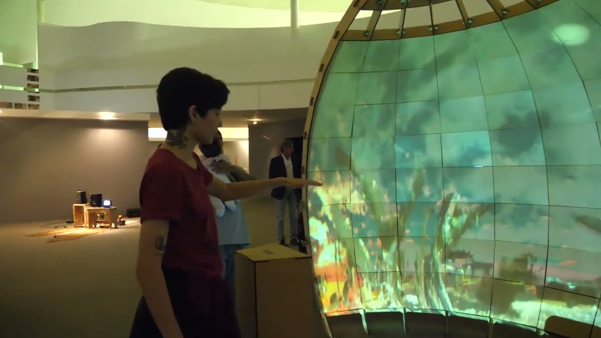
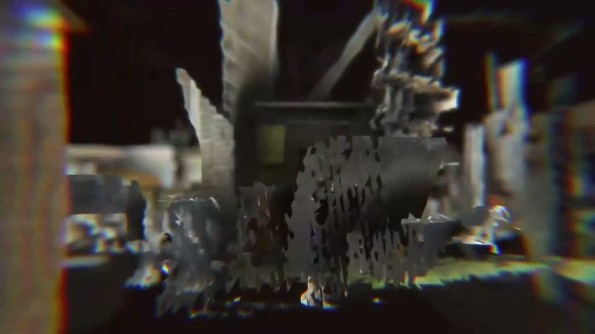

Memórias CorrompidasCorrupted Memories
Alexandre Rangel + Arthur Cordeiro, 2018
Exposição "A/RISCADO: Arte, Ciência e Tecnologia"
Museu Nacional da República, Brasília
Catálogo Exposição A/RISCADO > Work shown at expo "A/RISK: Art, Science and Technology"
Nacional Museum of the Republic, Brasília
A/RISCADO Exposition catalog >
Museu Nacional da República, Brasília
Catálogo Exposição A/RISCADO > Work shown at expo "A/RISK: Art, Science and Technology"
Nacional Museum of the Republic, Brasília
A/RISCADO Exposition catalog >

...
...
...